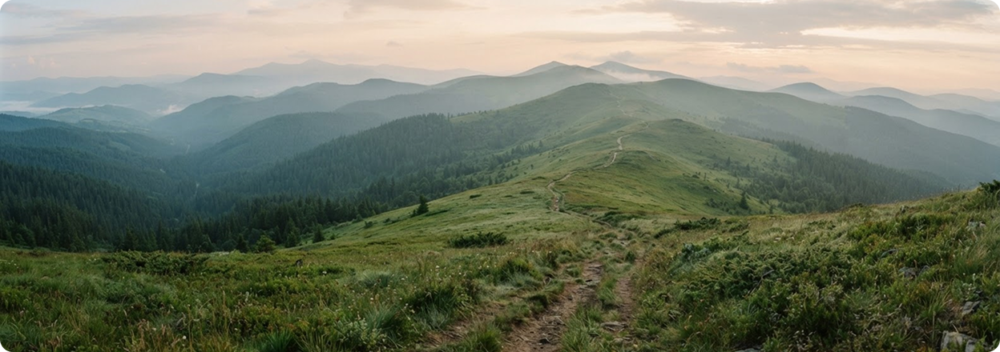
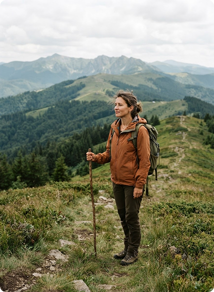

Філософія тихих та свідомих мандрівок Карпатами
Створюємо відпочинок без джипінгу, масового шуму та прихованих комісій

Наша місія
Чому ми створили «Зелені стежки Карпат»?
Ми знаємо, як виснажує планування гірського відпочинку: незрозуміле ціноутворення, очікування відповідей від менеджерів та невпевненість у тому, що саме входить у вартість. Тому ми створили платформу, де ви повністю контролюєте свою подорож.
На головній сторінці ви одразу бачите калькулятор, який дозволяє оцінити ціну туру без жодних звернень до менеджера. Ви можете налаштувати всі деталі поїздки одним пальцем зі свого смартфона. Сервіс показує детальну розшифровку бюджету, щоб ви чітко розуміли різницю між базовою ціною та додатковими послугами.
Обирайте маршрути за складністю та тривалістю; наявність гідів і спорядження на конкретні дати потрібно уточнювати в організатора. Для порівняння екологічності маршрутів у прототипі використано умовний показник Eco-Impact Score.

-
0%
Джипінгу та моторизованого шуму
-
100%
Прозорість ціни (Live Price Breakdown)
-
6
Маршрутів у каталозі
-
100%
Локальні сертифіковані гіди
Числові показники наведено з попереднього UI-прототипу й потрібно підтвердити реальними даними перед публічним використанням.
Наші головні принципи
-

Чесна вартість
Показуємо розшифровку кожного гривневого внеску без дзвінків менеджерам
-

Турбота про природу
Розраховуємо екологічний слід кожної поїздки та підтримуємо захист Карпат
-

Автентичний досвід
Тільки тихі піші маршрути та перевірені локальні провідники
Знайдіть свою тиху стежку
Оберіть маршрут для свідомої мандрівки Карпатами.